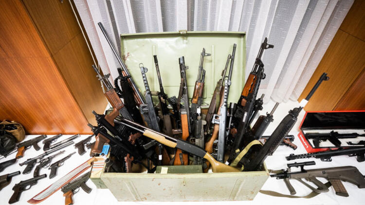

DÜNYA
Savaş bölgelerine silah kaçakçılığı yapan en ünlü isim Türk polisinin elinde..
Dünyanın en ünlü yasadışı silah tüccarlarından biri olan ‘Sergio’ veya ‘Gabo’ lakaplı Kırım asıllı Türk Sergen Keriş, İstanbul/Halkalı'da düzenlenen operasyonda yakalandı.
Çika medya organlarına göre 16 Ağustos’ta yakalanan Keriş, Afrika, Ortadoğu, Asya ve diğer bölgelerdeki çatışma alanlarına yasadışı şekilde silah ticareti yapan en ünlü isimlerden biri olarak sayılıyor.
Çika’da yayın yapan Lalest News gazetesi, 16 Ağustos’taki haberinde 'Sergio'nun bazı anlaşmalarına dikkati çekti. Habere göre Keriş, yüz bin tüfek, 13 milyon mermi ve 25 helikopter temini talebi aldı. Bunların karşılığında da tamamı yasadışı yollarla, 88 milyon euro kazandı.
4 yıldır kaçak bir şekilde kıta kıta gezerek silah ticareti yapan Sergio'nun son durağı Türkiye oldu..
Flamanca yayın yapan VTM kanalına göre federal polis, Halkalı'da küçük bir çamlıkta yakalanan Belçika’nın silah imparatoru Sergen Keriş'in geçtiğimiz yıl Belçika’da 4 yıl hapis cezasına çarptırıldığını, ancak o günden bu yana kaçak olduğunu söyledi.
IRAN VE IRAK SAVAŞININ BAŞ SİLAH TÜCCARI..
Medya organlarına göre Keriş, ister doğrudan ister dolaylı olsun, yasadışı silah ticareti ile ilgili uzun bir geçmişe sahip ve dünyanın her yerindeki makamlar tarafından da tanınıyor.
Haziran 2017’de Libya, Çad, Pakistan ve İran da dahil olmak üzere savaşa giren ülkelere uluslararası yaptırımlara aykırı olarak otomatik silah, mühimmat, helikopter, tank ve diğer askeri teçhizatları satmaktan üç yıl hapis ve 300 bin euro para cezasına çarptırıldı. VTM, Keriş'in silah tüccarlığı işinin, İran’ın Irak’la girdiği uzun savaşta silah sağladığı 1980’lere dayandığını belirtti.
Geçtiğimiz yıl Brüksel Temyiz Mahkemesi, cezayı 1,2 milyon euroluk para ve 4 yıl hapis cezasına çıkardı. Ama Keriş, kararı dinledikten sonra ilk fırsatta kaçtı ve bir süre saklandı. Keriş'in Fransa’da bir çiftlik sahibi olduğu biliniyor. Kaçmasının ardından söz konusu çiftlikte de arama operasyonu gerçekleştirildi, alan gözetim altına alındı, ancak Sergio yakalanamadı.
Ancak Sergen Keriş, geçtiğimiz ay 9 atını Türkiye'ye transfer emri verdiğinde büyük bir hata yaptı. Türk polisi, kaçakçılık şubeyle birlikte çalıştı. Nihayetinde de Keriş'in Türkiye’deki at ahırları, mülkleri ve topraklarına ulaşmak için bu hatadan faydalanıldı.
SERGEN KERIS(SERGIO/GABO)
Türk polisi, İstanbul kentinde bir villaya gözaltı operasyonu düzenledi. Polis, operasyonun Fransa, Belçika ve Portekiz’deki ilgili güvenlik kuruluşlarıyla işbirliği sayesinde gerçekleştirdiklerini belirtti.
Eylül 2009’da ABD’li yetkililer, Sergen Keriş'i İran’a silah kaçakçılığı yaptığı şüphesiyle gözaltına aldı. Belçika medya organları, o dönemde Keriş'in ve İranlı bir yardımcısının İran’a silah, F-5 türü savaş uçağı kaçakçılığıyla ve kara para aklamayla ilgili suçlamalarla karşı karşıya olduğunu ifade etti.